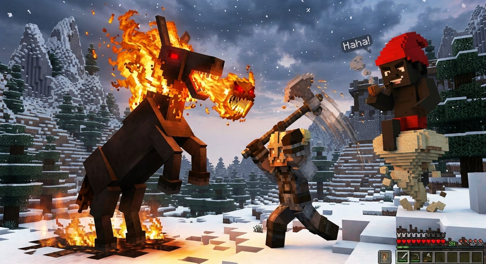
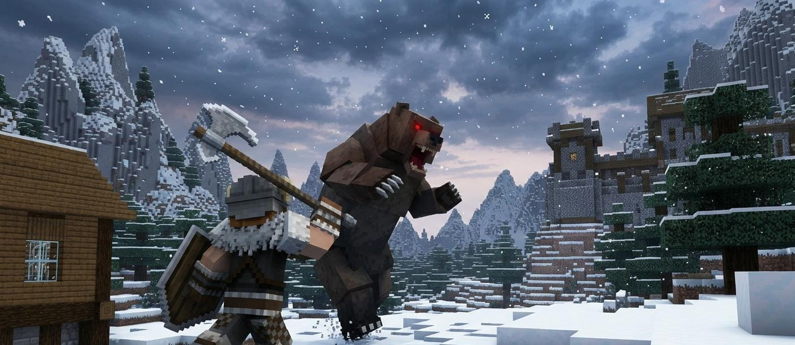
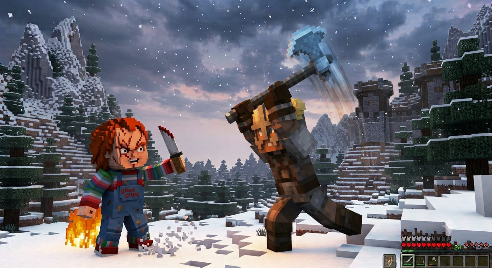
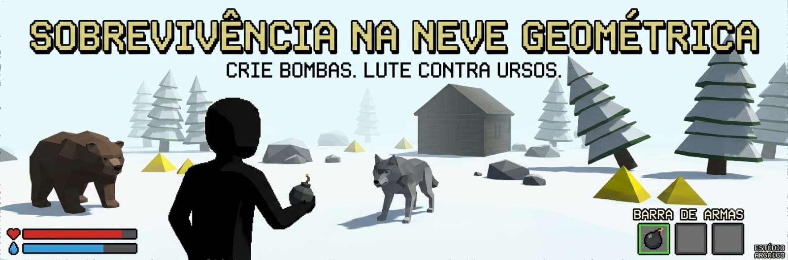

Clique ou toque para continuar
❤
🔥
🎒 0 · 📦 0/10
✊ Punhos — dano 12
Urso
1ª pessoa
00:00.00
Recorde Top 1
--:--.--
🌞 08:00
Clique para capturar o mouse
Armadilha: ▸☢1 · 🥩1 · 🧱0 · [G] tipo · [F] colocar
(TODOS)
Tutorial
DEMO automática
Rodando…
Esc cancela e você assume o controle
WASD · IJKL olhar · botão direito mirar · Alt+←→ ou Ver skin · scroll/1-9/0 arma · R recarga · B armas · E pegar/domar · G/F armadilha · C craft · H ajuda
Neve Selvagem
Como quer jogar?
Uma escolha. O resto fica simples.
Co-op
Um cria a sala. Os outros colam o código.
Código da sala
————
Já tem um código?
Neve Selvagem
Dificuldade
Médio é o balance padrão.
Neve Selvagem
Mapa
Classic é o layout atual. Random gera um mundo novo pela seed.
Neve Selvagem
Expedição salva
Há um progresso guardado neste aparelho.
Neve Selvagem
Escolha seu personagem
Escolha seu rosto — Natan, Jorge Bolado, Caio, Lorenzo ou ZÉ.
Toque num rosto. Arraste o boneco para girar.
Melhores tempos
Temporada · tecla T
Conquistas
Novidades — v1.0
Versão oficial · jul 2026
- Pickups no chão mais legíveis (lanterna, kit, mapa, munição…) + partículas ao pegar
- NPCs reagem a dano (flash, knockback) e aggro; sons de teleporte/tiro
- Menus de entrada redesenhados — co-op em 2 passos (Solo vs Com um amigo)
- Dificuldade Fácil / Médio / Difícil (depois da skin) — muda loot, inimigos, dano e frio
- Quatro chefs novos: Panda, Saci, T-Rex gatling e Boto-cor-de-rosa (troféu final no lago)
- Vitória: itens do baú + troféu do urso alfa + Troféu do Boto
- 5 personagens com rostos: Natan, Jorge Bolado, Caio, Lorenzo e ZÉ — escolha obrigatória com preview 3D girável
- Ordem aleatória dos cards a cada abertura do picker
- Rosto só na frente da cabeça; em 3ª pessoa use o botão Ver skin ou Alt + setas para orbitar e ver o personagem
- Celular: HUD limpo — stick + 4 botões (correr / interagir / pular / atacar); o resto fica em ⋯ (armas, armadilhas, câmera, chat, ajuda, novidades)
- Tutorial e dicas no touch usam ícones (◉ / ⚔), sem teclas de PC
- Barra de armas (B ou ⋯ → 🎒 no celular) mostra e esconde de verdade (com ✕)
- Ranking online (T) via HostGator — tempos falsos filtrados
- Board de sugestões — envie ideias em cards (estilo Jira); a comunidade vê tudo
- Estações do ano ciclam (chão, grama, neve, gelo e frio mudam) · cobertura atrás de pedras/baú bloqueia ataques
- Trilha procedural calma (estilo exploração) — desbloqueia no clique da skin/dificuldade
- Co-op com relay HTTPS se firewall bloquear P2P (precisa HostGator
api/signal.php) - Jogo no GitHub Pages + guia de deploy seguro na HostGator (preserva o ranking)
…
Esc / clique para pular
Co-op desconectado
A conexão caiu.
Reconecta na mesma partida sem refazer o menu.
Ajuda — Neve Selvagem
Controles
- WASD mover · Shift correr · Espaço pular
- E pegar item / depositar no baú / domar ou montar animal enfraquecido
- IJKL olhar (sem mouse) · B mostrar/esconder armas · 1–9/0 ou scroll equipar
- G tipo de armadilha · F colocar (perto da fogueira)
- V / Tab 1ª / 3ª pessoa · clique esquerdo atacar · arco/besta: segurar carrega (barra na mira) e soltar atira · segurar botão direito mirar (zoom)
- Alt + setas (3ª pessoa) orbitar câmera 360° e ver o rosto · Alt+V volta atrás
- Y ou Enter chat (estilo CS) · Esc cancela o chat
- Tutorial: botão Pular, Esc ou P — depois o mouse captura no clique
- H esta ajuda · T ranking · Esc pausar
- Celular: stick mover · 🏃 correr · ◉ interagir · ⤒ pular · ⚔ atacar · ⋯ abre armas/armadilhas/câmera/chat/ajuda/novidades
Perguntas frequentes
- Peguei flechas e não vi o arco
- Flechas liberam o Arco. Abra o inventário (B) — o slot deixa de ser 🔒.
- Arma sumiu / personagem branco na neve
- Em 1ª pessoa a arma fica na câmera; use V para 3ª pessoa. Troque o personagem no pause.
- Morri e perdi tudo?
- O que você carregava cai no chão perto do local da morte. O que já estava no baú fica seguro.
- Como entro no ranking?
- Deposite todos os itens (incluindo o Troféu do Urso e o Troféu do Boto), vença e envie o nome. A lista Top 10 abre com T a qualquer momento. Tempos vão para o ranking online da HostGator (também no GitHub Pages).
- O que muda na dificuldade?
- Fácil mais loot e frio brando; Médio é o padrão; Difícil inimigos fortes, pouco loot e frio cruel. Escolha depois da skin.
- O minimapa gira?
- Sim — a frente do personagem é sempre para cima no mapa. A seta branca fica no centro.
- Perdi o progresso ao fechar?
- O jogo auto-salva. Na próxima vez escolha Continuar. Revólver/escopeta/AK: R recarrega. Cerca: C na fogueira (gasta 1 da mochila).
- Que cachorro é esse me seguindo?
- É o husky companheiro (opcional). Ele fareja loot perto de você. Por padrão fica desligado — liga/desliga no pause em Husky.
- As estações mudam?
- Sim — a cada 2 dias de jogo ciclam Primavera → Verão → Outono → Inverno. Neve, gelo e frio mudam; o ícone aparece no relógio do HUD.
- Dá para se proteger dos inimigos?
- Sim. Fique atrás de pedras, árvores, baú ou cabana — a linha de visão deles fica bloqueada (mordida e tiros).
- Posso montar animais?
- Sim. Enfraqueça a mula sem cabeça, cavalo, pônei, dromedário ou panda (eles param de atacar) e aperte E para domar, depois E de novo para montar. Na fogueira dá para craftar armadura de montaria.
- Como troco de arma rápido?
- Com o mouse capturado, use o scroll (ou 1–9/0). B abre a barra de armas.
- Como sugiro uma feature ou reporto um bug?
- Abra o Board de sugestões (também no pause) — cada ideia vira um card; todo mundo vê e o time muda o status.
- O T-Rex com metralhadora é injusto?
- Use árvores, pedras e a cabana como cobertura — os tiros (dele e os seus) param nos obstáculos. Saia da linha de tiro para recarregar e atacar.
- Não ouço a trilha / música?
- A trilha é ambient gerado no browser (pads suaves + poucas notas). Toque/clique num personagem ou na dificuldade para liberar o áudio. OST própria: coloque mp3s em
music/e liste emmusic/manifest.json. - Como miro com zoom?
- Segure o botão direito do mouse — a câmera aproxima no crosshair (sensibilidade menor). Em 3ª pessoa a câmera também chega mais perto. Alt continua só para orbitar.
- Co-op não cria sala / “sinalização offline”?
- O co-op precisa da HostGator online (`api/signal.php`). Se falhar ao criar sala, é a sinalização — não o jogo no Pages. Peça ao admin subir o zip com a pasta
api/edata/rooms/gravável. - Criou a sala mas o amigo não conecta?
- Confira o código e tente de novo. Se o P2P for bloqueado por firewall/NAT, o jogo muda sozinho para relay HTTPS (~10s) — funciona em redes diferentes e dados móveis. Ambos precisam da HostGator no ar.